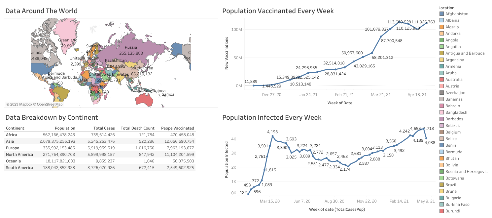

📊 Crafting Insights: Tableau Visualization of COVID-19 Exploration
Tableau Portfolio: Unveiling Data Stories with Visual Precision

Welcome to the vibrant realm of Tableau, where the data narrative of our COVID-19 exploration comes to life. In this tableau project portfolio post, I showcase the visual symphony derived from the meticulous data exploration journey shared in my first SQL post. If you're eager to dive into the full visualization and explore the underlying data, hop over to my Tableau Public page for an interactive experience. In the following paragraphs, I'll walk you through the thought process behind the chosen visualizations, unveiling the stories embedded in the data. Let's embark on a visual journey that transforms raw numbers into meaningful insights!
Below is a snapshot of the visual symphony you can explore in full on my Tableau Public page. These visuals act as windows into the intricacies of COVID-19 data, translating raw numbers into compelling narratives.
At the forefront of our Tableau portfolio stands a world map, intricately crafted to unravel the global narrative of COVID-19. Each country unfolds as a distinct entity, bearing witness to the collective impact of the pandemic. This visualization unveils essential metrics, ranging from total population and confirmed cases to COVID-19-related deaths and the triumph of vaccinations. The color palette weaves a tapestry of insights, offering a visual journey into the varied experiences of nations navigating the pandemic landscape.
Complementing the global perspective, our Tableau canvas unfolds another layer of detail in a straightforward yet impactful manner—a table. This tabular representation provides a concise breakdown of COVID-19 data across continents. The real numbers on display encapsulate the gravity of the situation, serving as a numerical testament to the toll the pandemic has taken on each continent
The third and fourth visuals in our Tableau showcase take us into a dynamic realm of comparison. Here, we juxtapose the weekly data of individuals who received the COVID-19 vaccine with those who contracted the virus. This visual analysis sheds light on the ongoing battle against the pandemic, revealing a nuanced narrative. While the data hints at a gradual decline in infections among the vaccinated population, the magnitude remains tempered by the sizable segment yet to receive the vaccine.
In this tableau project portfolio post, I've offered a visual journey through the intricate landscapes of COVID-19 data. Each visualization chosen is a deliberate brushstroke, painting a narrative of global impact and vaccination strides. However, the full depth of each data point awaits your exploration on my Tableau Public page. There, you'll not only unravel the complete data story behind each image but also discover other Tableau projects that have come to life. A heartfelt thank you to each reader who embarked on this visual exploration—your curiosity and engagement add vibrancy to the data narratives we craft together. Until our next tableau venture, happy exploring!